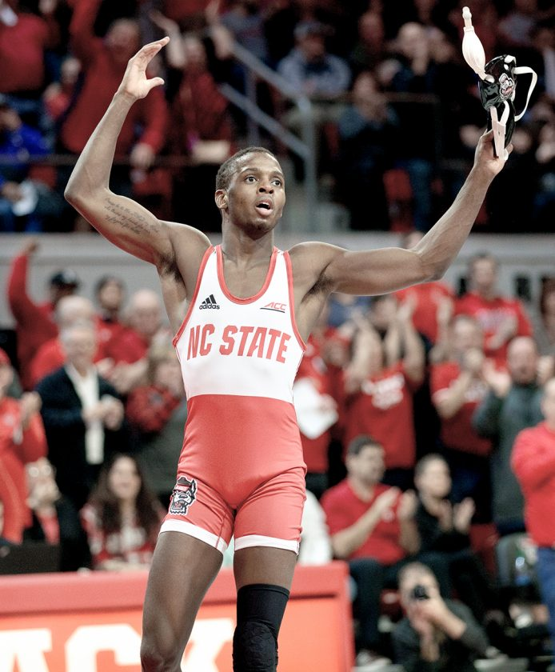

It’s been eight months since we’ve seen college wrestling following the cancellation of the NCAA tournament due to Covid-19. Finally, after a long wait it appears we will soon see a return of the world’s oldest sport at the collegiate level. First noted by Flowrestling, eight programs have released their schedules for this upcoming season.Hofstra otherwise known as the pride of Long Island is currently the lone team in the EIWA to put out a schedule. In the Big 12, the Iowa State Cyclones and North Dakota State Bison have released their schedules.
NC State, and Virginia Tech are ready to go for ACC competition and Appalachian State, Tennessee Chattanooga, and Virginia Military Institute are set to compete for the SoCon. The season will start at the beginning of the new year and run through the end of February where conference championships will take place. Teams will have a break in competition until the NCAA tournament which begins on March 18th. While this will be a condensed season due to Covid-19, there still is plenty of interesting matchups to look out for. Just in the ACC alone, NC State will have two big dual meets worth the fanfare.
image from the Herald star
The Wolfpack will take on the Tarheels of North Carolina on January 29th in Chapel Hill. This is a matchup that has already become a huge rivalry in the state and will have individual ranked matchups going across the board. On February 5th NC State will take on the Virginia Tech Hokies in Blacksburg VA. Similarly, to the UNC dual there will be a lot of ranked matches across the board with an extra twist as national champion Mekhi Lewis plans to return to the lineup for the Hokies. The RTC cup which recently took place saw numerous collegiate competitors take the mat, and was able to give us a glimpse into what the season could look like.
NC State All-American Tariq Wilson was one of those competitors and is looking forward to the season. “I’m anxious, I plan on wrestling this season if everything is permitted to move forward” Wilson said. On the matter of his weight class, Wilson plans to return to 141 lbs. “The way the season ended, and the way I ended my season, I feel it’s only right to run it back and show everyone my improvement.”
More programs are expected to release their schedules in the coming days as the excitement of college wrestling is here to return.
By Rich Perez